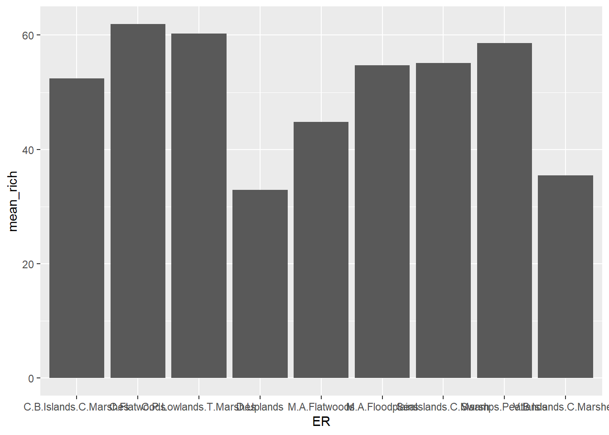
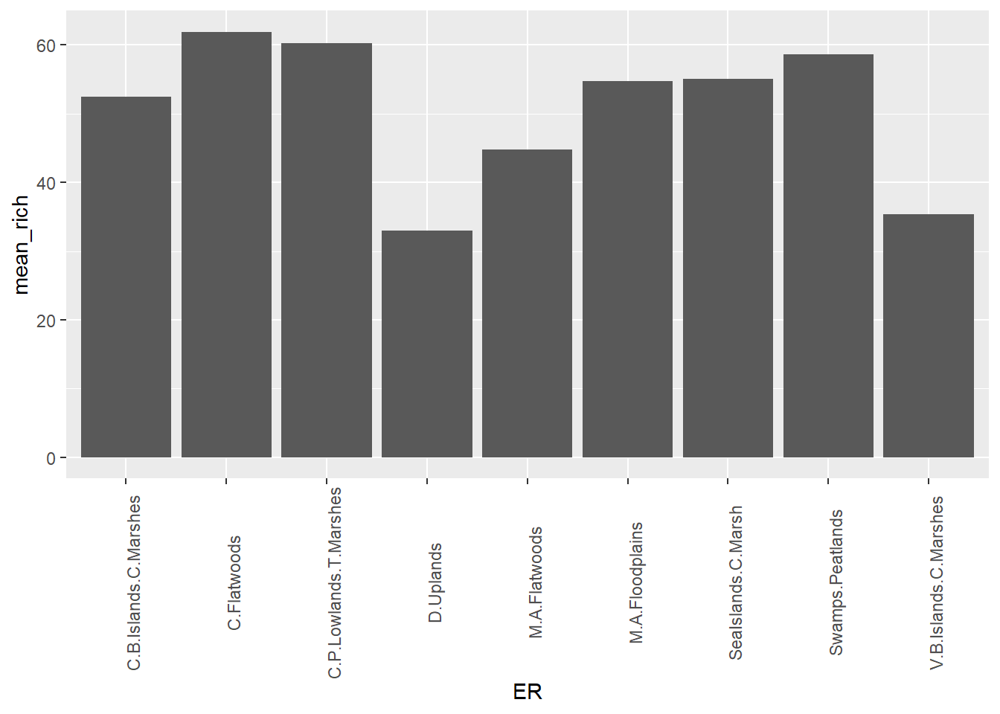
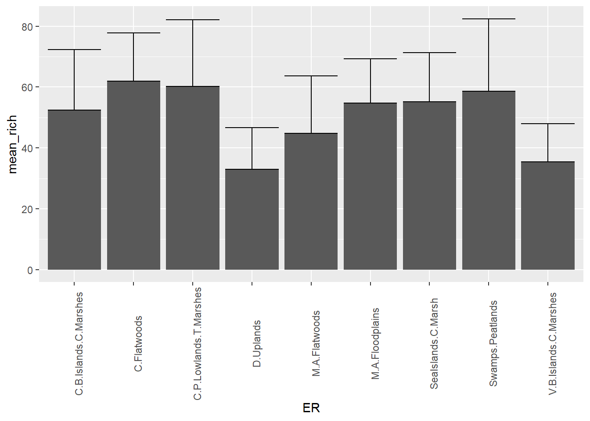

4 Part 2. Making Effective Graphs
In this section, we will make a few different types of graphs, using the package ggplot2. You’ll also spend some time thinking about the best way to visualize different types of data.
You will need to install and load the package ggplot2 and you might want to keep the ggplot2 cheatsheet handy.
We’ll start by making a simple barplot of mean species richness using the dataframes we created at the end of 3. The package ggplot works with datafames and not vectors (as is the case when using the plot function in baseR). The syntax of ggplot is also very elegant in that you can “layer” on data and themes to an existing plot using the + symbol at the end of each line – we made use of this when we employed ggplot2 to do GIS-type mapping in the previous Module for this course).
ggplot(data = EcoR_spp_mean) +
geom_col(mapping= aes(x = ER, y = mean_rich))
You might notice that the text labels on the X-axis are not well-placed. We can adjust this by adding a theme that specifies the angle at which to display the text. Note that the first two lines of the code chunk below are identical to the chunk above, but with the + sign added at the end, so that we can add a line of code to add a theme function.
ggplot(data = EcoR_spp_mean) +
geom_col(mapping= aes(x = ER, y = mean_rich)) +
theme(axis.text.x = element_text(angle = 90))
To add error bars, one way we could do that is to first add the standard error we calculated in 3 to the dataframe that ggplot2 is using, again using a dplyr function.
EcoR_spp_meanse <- inner_join(EcoR_spp_mean, EcoR_spp_se, "ER")Then we simply add another geom function to the code snippet above, and adjust the data = code to reflect the new set with the standard error column added.
ggplot(data = EcoR_spp_meanse) +
geom_col(mapping= aes(x = ER, y = mean_rich)) +
geom_errorbar(mapping = aes(x = ER, ymin = mean_rich, ymax = mean_rich + se_rich)) +
theme(axis.text.x = element_text(angle = 90))
4.1 Your assignment for Part 2
Pick two variables in one of the datasets we’re using here that would be best shown as a scatterplot. Feel free to join or group data from any of the 3 datasets to pracitse your data wrangling skills. Try adjusting the symbology and axis labels for maximum effect. Hand in a copy of your code and the finished figure. Justify why a scatterplot is an appropriate way to display these data.
For graduate students (and ambitious undergrads) In addition to the above step, pick a graph type in
ggplot2that you have never created before (but that perhaps is a way you may want to visualize your own data for your graduate work), and pick the appropriate data from one or more of the sets avaialable here to create a figure. Hand in a copy of your code and the finished figure. Justify why the data chosen fit this kind of figure well.